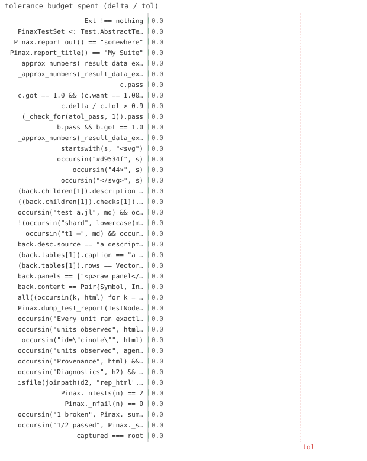

172/172 passed · 132.29s
| id | label | got | want | Δ vs tol (kind) | |
|---|---|---|---|---|---|
| ✓ | t687 | Ext !== nothing @ test_testset.jl:33 code | 1.0 | 1.0 | 0.0 vs 0.5 (abs) |
| ✓ | t688 | PinaxTestSet <: Test.AbstractTestSet @ test_testset.jl:34 code | 1.0 | 1.0 | 0.0 vs 0.5 (abs) |
| ✓ | t689 | Pinax.report_out() == "somewhere" @ test_testset.jl:36 code | 1.0 | 1.0 | 0.0 vs 0.5 (abs) |
| ✓ | t690 | Pinax.report_title() == "My Suite" @ test_testset.jl:39 code | 1.0 | 1.0 | 0.0 vs 0.5 (abs) |
| ✓ | t691 | !(Pinax.capture_requested()) @ test_testset.jl:51 code | 1.0 | 1.0 | 0.0 vs 0.5 (abs) |
| ✓ | t692 | Pinax.install_test_capture!() == false @ test_testset.jl:52 code | 1.0 | 1.0 | 0.0 vs 0.5 (abs) |
| ✓ | t693 | Pinax.capture_requested() @ test_testset.jl:55 code | 1.0 | 1.0 | 0.0 vs 0.5 (abs) |
| ✓ | t694 | Pinax.capture_requested() @ test_testset.jl:58 code | 1.0 | 1.0 | 0.0 vs 0.5 (abs) |
| ✓ | t695 | Pinax.install_test_capture!() == false @ test_testset.jl:66 code | 1.0 | 1.0 | 0.0 vs 0.5 (abs) |
| ✓ | t696 | Pinax._install_test_capture!() == false @ test_testset.jl:67 code | 1.0 | 1.0 | 0.0 vs 0.5 (abs) |
| ✓ | t697 | _approx_numbers(_result_data_expr(pass)) == (1.0, 1.0098, 0.01, :rel) @ test_testset.jl:80 code | 1.0 | 1.0 | 0.0 vs 0.5 (abs) |
| ✓ | t698 | _approx_numbers(_result_data_expr(fail)) == (0.5, 0.9, 0.01, :rel) @ test_testset.jl:91 code | 1.0 | 1.0 | 0.0 vs 0.5 (abs) |
| ✓ | t699 | c.pass @ test_testset.jl:97 code | 1.0 | 1.0 | 0.0 vs 0.5 (abs) |
| ✓ | t700 | c.got == 1.0 && (c.want == 1.0098 && (c.tol == 0.01 && c.kind === :rel)) @ test_testset.jl:98 code | 1.0 | 1.0 | 0.0 vs 0.5 (abs) |
| ✓ | t701 | c.delta / c.tol > 0.9 @ test_testset.jl:99 code | 1.0 | 1.0 | 0.0 vs 0.5 (abs) |
| ✓ | t702 | (_check_for(atol_pass, 1)).pass @ test_testset.jl:107 code | 1.0 | 1.0 | 0.0 vs 0.5 (abs) |
| ✓ | t703 | b.pass && b.got == 1.0 @ test_testset.jl:111 code | 1.0 | 1.0 | 0.0 vs 0.5 (abs) |
| ✓ | t704 | _approx_numbers(_result_data_expr(p)) == (0.001, 0.0, 0.01, :abs) @ test_testset.jl:116 code | 1.0 | 1.0 | 0.0 vs 0.5 (abs) |
| ✓ | t705 | startswith(s, "<svg") @ test_testset.jl:126 code | 1.0 | 1.0 | 0.0 vs 0.5 (abs) |
| ✓ | t706 | occursin("#d9534f", s) @ test_testset.jl:127 code | 1.0 | 1.0 | 0.0 vs 0.5 (abs) |
| ✓ | t707 | occursin("44×", s) @ test_testset.jl:128 code | 1.0 | 1.0 | 0.0 vs 0.5 (abs) |
| ✓ | t708 | occursin("</svg>", s) @ test_testset.jl:129 code | 1.0 | 1.0 | 0.0 vs 0.5 (abs) |
| ✓ | t709 | (back.children[1]).description == "test_a.jl" @ test_testset.jl:154 code | 1.0 | 1.0 | 0.0 vs 0.5 (abs) |
| ✓ | t710 | ((back.children[1]).checks[1]).want === 1.0098 @ test_testset.jl:155 code | 1.0 | 1.0 | 0.0 vs 0.5 (abs) |
| ✓ | t711 | occursin("test_a.jl", md) && occursin("test_b.jl", md) @ test_testset.jl:160 code | 1.0 | 1.0 | 0.0 vs 0.5 (abs) |
| ✓ | t712 | !(occursin("shard", lowercase(md))) @ test_testset.jl:161 code | 1.0 | 1.0 | 0.0 vs 0.5 (abs) |
| ✓ | t713 | occursin("t1 —", md) && occursin("t2 —", md) @ test_testset.jl:163 code | 1.0 | 1.0 | 0.0 vs 0.5 (abs) |
| ✓ | t714 | back.desc.source == "a description" @ test_testset.jl:192 code | 1.0 | 1.0 | 0.0 vs 0.5 (abs) |
| ✓ | t715 | (back.tables[1]).caption == "a caption" @ test_testset.jl:193 code | 1.0 | 1.0 | 0.0 vs 0.5 (abs) |
| ✓ | t716 | (back.tables[1]).rows == Vector{Any}[Any[10, -0.1], Any[20, ""]] @ test_testset.jl:194 code | 1.0 | 1.0 | 0.0 vs 0.5 (abs) |
| ✓ | t717 | back.panels == ["<p>raw panel</p>"] @ test_testset.jl:195 code | 1.0 | 1.0 | 0.0 vs 0.5 (abs) |
| ✓ | t718 | back.content == Pair{Symbol, Int}[:code => 1, :check => 1, :table => 1, :panel => 1] @ test_testset.jl:196 code | 1.0 | 1.0 | 0.0 vs 0.5 (abs) |
| ✓ | t719 | all((occursin(k, html) for k = ("a description", "a caption", "raw panel", "E = f(x)"))) @ test_testset.jl:200 code | 1.0 | 1.0 | 0.0 vs 0.5 (abs) |
| ✓ | t720 | Pinax.dump_test_report(TestNode("g.jl"; figures = [fig]), joinpath(dir, "g.toml")) @ test_testset.jl:208 code | 1.0 | 1.0 | 0.0 vs 0.5 (abs) |
| ✓ | t721 | occursin("Every unit ran exactly once", html) @ test_testset.jl:229 code | 1.0 | 1.0 | 0.0 vs 0.5 (abs) |
| ✓ | t722 | occursin("units observed", html) && occursin("Completeness", html) @ test_testset.jl:230 code | 1.0 | 1.0 | 0.0 vs 0.5 (abs) |
| ✓ | t723 | occursin("id=\"cinote\"", html) @ test_testset.jl:231 code | 1.0 | 1.0 | 0.0 vs 0.5 (abs) |
| ✓ | t724 | occursin("units observed", agent) && occursin("\"caption\":\"Completeness\"", agent) @ test_testset.jl:234 code | 1.0 | 1.0 | 0.0 vs 0.5 (abs) |
| ✓ | t725 | occursin("Provenance", html) && occursin("Per-file result profile", html) @ test_testset.jl:237 code | 1.0 | 1.0 | 0.0 vs 0.5 (abs) |
| ✓ | t726 | occursin("Diagnostics", h2) && occursin("boom", h2) @ test_testset.jl:249 code | 1.0 | 1.0 | 0.0 vs 0.5 (abs) |
| ✓ | t727 | isfile(joinpath(d2, "rep_html", "overview.html")) @ test_testset.jl:250 code | 1.0 | 1.0 | 0.0 vs 0.5 (abs) |
| ✓ | t728 | Pinax._ntests(n) == 2 @ test_testset.jl:261 code | 1.0 | 1.0 | 0.0 vs 0.5 (abs) |
| ✓ | t729 | Pinax._nfail(n) == 0 @ test_testset.jl:262 code | 1.0 | 1.0 | 0.0 vs 0.5 (abs) |
| ✓ | t730 | occursin("1 broken", Pinax._summary_line(n)) @ test_testset.jl:263 code | 1.0 | 1.0 | 0.0 vs 0.5 (abs) |
| ✓ | t731 | occursin("1/2 passed", Pinax._summary_line(n)) @ test_testset.jl:264 code | 1.0 | 1.0 | 0.0 vs 0.5 (abs) |
| ✓ | t732 | captured === root @ test_testset.jl:282 code | 1.0 | 1.0 | 0.0 vs 0.5 (abs) |
| ✓ | t733 | length(root.figures) == 2 @ test_testset.jl:283 code | 1.0 | 1.0 | 0.0 vs 0.5 (abs) |
| ✓ | t734 | root.desc !== nothing && occursin("a description", root.desc.source) @ test_testset.jl:284 code | 1.0 | 1.0 | 0.0 vs 0.5 (abs) |
| ✓ | t735 | root.content == [:figure => 1, :figure => 2] @ test_testset.jl:285 code | 1.0 | 1.0 | 0.0 vs 0.5 (abs) |
| ✓ | t736 | occursin("a table caption", html) @ test_testset.jl:339 code | 1.0 | 1.0 | 0.0 vs 0.5 (abs) |
| ✓ | t737 | occursin("hand built", html) @ test_testset.jl:340 code | 1.0 | 1.0 | 0.0 vs 0.5 (abs) |
| ✓ | t738 | isfile(Pinax.dump_test_report(root, joinpath(dir, "d.toml"))) @ test_testset.jl:342 code | 1.0 | 1.0 | 0.0 vs 0.5 (abs) |
| ✓ | t739 | isfile(joinpath(dir, "r_html", "test_a_jl.html")) @ test_testset.jl:361 code | 1.0 | 1.0 | 0.0 vs 0.5 (abs) |
| ✓ | t740 | isfile(joinpath(dir, "r_html", "test_a_jl-2.html")) @ test_testset.jl:362 code | 1.0 | 1.0 | 0.0 vs 0.5 (abs) |
| ✓ | t741 | occursin("test_a_jl_basics", html) && occursin("test_a_jl_basics-2", html) @ test_testset.jl:365 code | 1.0 | 1.0 | 0.0 vs 0.5 (abs) |
| ✓ | t742 | dups >= 2 @ test_testset.jl:370 code | 1.0 | 1.0 | 0.0 vs 0.5 (abs) |
| ✓ | t743 | length(((doc.pages[1]).sections[1]).figures) == 1 @ test_testset.jl:383 code | 1.0 | 1.0 | 0.0 vs 0.5 (abs) |
| ✓ | t744 | !(r.ok) @ test_testset.jl:428 code | 1.0 | 1.0 | 0.0 vs 0.5 (abs) |
| ✓ | t745 | !(isdir(joinpath(dir, "rep_agent"))) @ test_testset.jl:429 code | 1.0 | 1.0 | 0.0 vs 0.5 (abs) |
| ✓ | t746 | !(r.ok) @ test_testset.jl:435 code | 1.0 | 1.0 | 0.0 vs 0.5 (abs) |
| ✓ | t747 | occursin("Pinax test report", r.log) @ test_testset.jl:436 code | 1.0 | 1.0 | 0.0 vs 0.5 (abs) |
| ✓ | t748 | occursin("1/2 FAIL", md) @ test_testset.jl:438 code | 1.0 | 1.0 | 0.0 vs 0.5 (abs) |
| ✓ | t749 | occursin("got 0.5, want 0.9", md) @ test_testset.jl:439 code | 1.0 | 1.0 | 0.0 vs 0.5 (abs) |
| ✓ | t750 | occursin("convergence of E against the oracle", md) @ test_testset.jl:440 code | 1.0 | 1.0 | 0.0 vs 0.5 (abs) |
| ✓ | t751 | isfile(joinpath(dir, "rep_html", "test_demo_jl.html")) @ test_testset.jl:441 code | 1.0 | 1.0 | 0.0 vs 0.5 (abs) |
| ✓ | t752 | !(occursin("noisy fixture", md)) @ test_testset.jl:442 code | 1.0 | 1.0 | 0.0 vs 0.5 (abs) |
| ✓ | t753 | !(r.ok) @ test_testset.jl:452 code | 1.0 | 1.0 | 0.0 vs 0.5 (abs) |
| ✓ | t754 | occursin("Pinax test report", r.log) @ test_testset.jl:453 code | 1.0 | 1.0 | 0.0 vs 0.5 (abs) |
| ✓ | t755 | occursin("1/2 FAIL", md_suite) @ test_testset.jl:455 code | 1.0 | 1.0 | 0.0 vs 0.5 (abs) |
| ✓ | t756 | occursin("got 0.5, want 0.9", md_suite) @ test_testset.jl:456 code | 1.0 | 1.0 | 0.0 vs 0.5 (abs) |
| ✓ | t757 | occursin("convergence of E against the oracle", md_suite) @ test_testset.jl:457 code | 1.0 | 1.0 | 0.0 vs 0.5 (abs) |
| ✓ | t758 | !(r.ok) @ test_testset.jl:466 code | 1.0 | 1.0 | 0.0 vs 0.5 (abs) |
| ✓ | t759 | !(occursin("Pinax test report", r.log)) @ test_testset.jl:467 code | 1.0 | 1.0 | 0.0 vs 0.5 (abs) |
| ✓ | t760 | !(isdir(joinpath(dir, "test-report_agent"))) @ test_testset.jl:468 code | 1.0 | 1.0 | 0.0 vs 0.5 (abs) |
| ✓ | t761 | !(r.ok) @ test_testset.jl:478 code | 1.0 | 1.0 | 0.0 vs 0.5 (abs) |
| ✓ | t762 | length(collect(eachmatch(r"Pinax test report", r.log))) == 1 @ test_testset.jl:479 code | 1.0 | 1.0 | 0.0 vs 0.5 (abs) |
| ✓ | t763 | occursin("1/2 FAIL", md_once) @ test_testset.jl:481 code | 1.0 | 1.0 | 0.0 vs 0.5 (abs) |
| ✓ | t764 | r.ok @ test_testset.jl:491 code | 1.0 | 1.0 | 0.0 vs 0.5 (abs) |
| ✓ | t765 | occursin("is not loaded", r.log) @ test_testset.jl:492 code | 1.0 | 1.0 | 0.0 vs 0.5 (abs) |
| ✓ | t766 | !(isdir(joinpath(dir, "notest_agent"))) @ test_testset.jl:493 code | 1.0 | 1.0 | 0.0 vs 0.5 (abs) |
| ✓ | t767 | run_it(joinpath(dir, "suite.jl"), out) @ test_testset.jl:532 code | 1.0 | 1.0 | 0.0 vs 0.5 (abs) |
| ✓ | t768 | isfile(joinpath(out * "_html", "ok_jl.html")) @ test_testset.jl:533 code | 1.0 | 1.0 | 0.0 vs 0.5 (abs) |
| ✓ | t769 | occursin("a description written inside a plain @testset", md) @ test_testset.jl:535 code | 1.0 | 1.0 | 0.0 vs 0.5 (abs) |
| ✓ | t770 | !(run_it(joinpath(dir, "bad.jl"), joinpath(dir, "badrep"))) @ test_testset.jl:538 code | 1.0 | 1.0 | 0.0 vs 0.5 (abs) |
| ✓ | t771 | _parse_binding("χ = 8") == [:χ => "8"] @ test_testset.jl:558 code | 1.0 | 1.0 | 0.0 vs 0.5 (abs) |
| ✓ | t772 | _parse_binding("χ = 8, β = 0.1") == [:χ => "8", :β => "0.1"] @ test_testset.jl:559 code | 1.0 | 1.0 | 0.0 vs 0.5 (abs) |
| ✓ | t773 | _parse_binding("N = (1, 2)") == [:N => "(1, 2)"] @ test_testset.jl:560 code | 1.0 | 1.0 | 0.0 vs 0.5 (abs) |
| ✓ | t774 | _parse_binding("a plain sentence") === nothing @ test_testset.jl:561 code | 1.0 | 1.0 | 0.0 vs 0.5 (abs) |
| ✓ | t775 | _parse_binding("MyPkg") === nothing @ test_testset.jl:562 code | 1.0 | 1.0 | 0.0 vs 0.5 (abs) |
| ✓ | t776 | _parse_binding("x == y") === nothing @ test_testset.jl:563 code | 1.0 | 1.0 | 0.0 vs 0.5 (abs) |
| ✓ | t777 | _is_swept(file, _looks_like_a_file) @ test_testset.jl:571 code | 1.0 | 1.0 | 0.0 vs 0.5 (abs) |
| ✓ | t778 | occursin("Convergence of", html) @ test_testset.jl:576 code | 1.0 | 1.0 | 0.0 vs 0.5 (abs) |
| ✓ | t779 | occursin("test_conv_jl_conv_1", md) @ test_testset.jl:577 code | 1.0 | 1.0 | 0.0 vs 0.5 (abs) |
| ✓ | t780 | occursin("test_conv_jl_swpmargin_1", md) @ test_testset.jl:578 code | 1.0 | 1.0 | 0.0 vs 0.5 (abs) |
| ✓ | t781 | occursin("1/3 FAIL", md) @ test_testset.jl:579 code | 1.0 | 1.0 | 0.0 vs 0.5 (abs) |
| ✓ | t782 | occursin("[χ = 8]", md) && occursin("[χ = 32]", md) @ test_testset.jl:580 code | 1.0 | 1.0 | 0.0 vs 0.5 (abs) |
| ✓ | t783 | !(occursin("[id: test_conv_jl_8]", md)) @ test_testset.jl:581 code | 1.0 | 1.0 | 0.0 vs 0.5 (abs) |
| ✓ | t784 | _is_swept(file, _looks_like_a_file) @ test_testset.jl:594 code | 1.0 | 1.0 | 0.0 vs 0.5 (abs) |
| ✓ | t785 | occursin("χ = 8", html) && occursin("χ = 16", html) @ test_testset.jl:598 code | 1.0 | 1.0 | 0.0 vs 0.5 (abs) |
| ✓ | t786 | _is_swept(file, _looks_like_a_file) @ test_testset.jl:606 code | 1.0 | 1.0 | 0.0 vs 0.5 (abs) |
| ✓ | t787 | occursin("TFIM", html) && occursin("Heisenberg", html) @ test_testset.jl:610 code | 1.0 | 1.0 | 0.0 vs 0.5 (abs) |
| ✓ | t788 | !(_is_swept(file, _looks_like_a_file)) @ test_testset.jl:621 code | 1.0 | 1.0 | 0.0 vs 0.5 (abs) |
| ✓ | t789 | occursin("a smoke check", txt) @ test_testset.jl:629 code | 1.0 | 1.0 | 0.0 vs 0.5 (abs) |
| ✓ | t790 | occursin("could not be folded", txt) @ test_testset.jl:630 code | 1.0 | 1.0 | 0.0 vs 0.5 (abs) |
| ✓ | t791 | occursin("Convergence of", md) @ test_testset.jl:659 code | 1.0 | 1.0 | 0.0 vs 0.5 (abs) |
| ✓ | t792 | occursin("[χ = 8]", md) && occursin("[χ = 32]", md) @ test_testset.jl:660 code | 1.0 | 1.0 | 0.0 vs 0.5 (abs) |
| ✓ | t793 | occursin("1/3", md) @ test_testset.jl:661 code | 1.0 | 1.0 | 0.0 vs 0.5 (abs) |
| ✓ | t794 | any((r->begin #= /home/runner/work/Pinax.jl/Pinax.jl/test/test_testset.jl:675 =# r.… @ test_testset.jl:675 code | 1.0 | 1.0 | 0.0 vs 0.5 (abs) |
| ✓ | t795 | any((r->begin #= /home/runner/work/Pinax.jl/Pinax.jl/test/test_testset.jl:676 =# r.… @ test_testset.jl:676 code | 1.0 | 1.0 | 0.0 vs 0.5 (abs) |
| ✓ | t796 | any((r->begin #= /home/runner/work/Pinax.jl/Pinax.jl/test/test_testset.jl:677 =# r.… @ test_testset.jl:677 code | 1.0 | 1.0 | 0.0 vs 0.5 (abs) |
| ✓ | t797 | any((r->begin #= /home/runner/work/Pinax.jl/Pinax.jl/test/test_testset.jl:678 =# r.… @ test_testset.jl:678 code | 1.0 | 1.0 | 0.0 vs 0.5 (abs) |
| ✓ | t798 | occursin("Provenance", md) && occursin("feat/x", md) @ test_testset.jl:693 code | 1.0 | 1.0 | 0.0 vs 0.5 (abs) |
| ✓ | t799 | Pinax._package_line(proj) == "Demo v1.2.3" @ test_testset.jl:699 code | 1.0 | 1.0 | 0.0 vs 0.5 (abs) |
| ✓ | t800 | Pinax._package_line(nothing) == "" @ test_testset.jl:700 code | 1.0 | 1.0 | 0.0 vs 0.5 (abs) |
| ✓ | t801 | Pinax._package_line(joinpath(tempdir(), "nope-missing.toml")) == "" @ test_testset.jl:701 code | 1.0 | 1.0 | 0.0 vs 0.5 (abs) |
| ✓ | t802 | Pinax._package_line(proj) == "" @ test_testset.jl:703 code | 1.0 | 1.0 | 0.0 vs 0.5 (abs) |
| ✓ | t803 | any((r->begin #= /home/runner/work/Pinax.jl/Pinax.jl/test/test_testset.jl:712 =# r.… @ test_testset.jl:712 code | 1.0 | 1.0 | 0.0 vs 0.5 (abs) |
| ✓ | t804 | !(any((r->begin #= /home/runner/work/Pinax.jl/Pinax.jl/test/test_testset.jl:713 =# … @ test_testset.jl:713 code | 1.0 | 1.0 | 0.0 vs 0.5 (abs) |
| ✓ | t805 | (root.checks[end]).label == "energy" @ test_testset.jl:728 code | 1.0 | 1.0 | 0.0 vs 0.5 (abs) |
| ✓ | t806 | any((e->begin #= /home/runner/work/Pinax.jl/Pinax.jl/test/test_testset.jl:736 =# oc… @ test_testset.jl:735 code | 1.0 | 1.0 | 0.0 vs 0.5 (abs) |
| ✓ | t807 | Ext._source_str(fail) == "test_x.jl:42" @ test_testset.jl:768 code | 1.0 | 1.0 | 0.0 vs 0.5 (abs) |
| ✓ | t808 | Ext._source_str(Test.Pass(:test, :x, :(1 == 1), nothing)) == "" @ test_testset.jl:769 code | 1.0 | 1.0 | 0.0 vs 0.5 (abs) |
| ✓ | t809 | (root.checks[end]).source == "test_x.jl:42" && !((root.checks[end]).pass) @ test_testset.jl:779 code | 1.0 | 1.0 | 0.0 vs 0.5 (abs) |
| ✓ | t810 | ((Pinax.load_test_dump(d)).checks[1]).source == "test_x.jl:42" @ test_testset.jl:787 code | 1.0 | 1.0 | 0.0 vs 0.5 (abs) |
| ✓ | t811 | occursin("\"source\":\"test_x.jl:42\"", aj) @ test_testset.jl:795 code | 1.0 | 1.0 | 0.0 vs 0.5 (abs) |
| ✓ | t812 | length(shown) == Pinax._MAX_CHECK_ROWS @ test_testset.jl:816 code | 1.0 | 1.0 | 0.0 vs 0.5 (abs) |
| ✓ | t813 | count((c->begin #= /home/runner/work/Pinax.jl/Pinax.jl/test/test_testset.jl:817 =# … @ test_testset.jl:817 code | 1.0 | 1.0 | 0.0 vs 0.5 (abs) |
| ✓ | t814 | hf == 0 && hp == 500 - Pinax._MAX_CHECK_ROWS @ test_testset.jl:818 code | 1.0 | 1.0 | 0.0 vs 0.5 (abs) |
| ✓ | t815 | Pinax._cap_gallery_checks(small, Pinax._MAX_CHECK_ROWS) == (small, 0, 0) @ test_testset.jl:820 code | 1.0 | 1.0 | 0.0 vs 0.5 (abs) |
| ✓ | t816 | occursin("more not shown", html) @ test_testset.jl:827 code | 1.0 | 1.0 | 0.0 vs 0.5 (abs) |
| ✓ | t817 | occursin("$(500 - length(fails))/500", html) @ test_testset.jl:828 code | 1.0 | 1.0 | 0.0 vs 0.5 (abs) |
| ✓ | t818 | count("pinax-pass\"", html) + count("pinax-fail\"", html) <= Pinax._MAX_CHECK_ROWS @ test_testset.jl:829 code | 1.0 | 1.0 | 0.0 vs 0.5 (abs) |
| ✓ | t819 | occursin("worst of 500", html) @ test_testset.jl:831 code | 1.0 | 1.0 | 0.0 vs 0.5 (abs) |
| ✓ | t820 | count("\"pass\":", aj) >= 500 @ test_testset.jl:833 code | 1.0 | 1.0 | 0.0 vs 0.5 (abs) |
| ✓ | t821 | occursin("matrix", read(dA, String)) @ test_testset.jl:867 code | 1.0 | 1.0 | 0.0 vs 0.5 (abs) |
| ✓ | t822 | occursin("julia 1.11 · ubuntu", idx) && occursin("julia 1.10 · ubuntu", idx) @ test_testset.jl:874 code | 1.0 | 1.0 | 0.0 vs 0.5 (abs) |
| ✓ | t823 | count((f->begin #= /home/runner/work/Pinax.jl/Pinax.jl/test/test_testset.jl:876 =# … @ test_testset.jl:876 code | 1.0 | 1.0 | 0.0 vs 0.5 (abs) |
| ✓ | t824 | occursin("1/1 PASS", md) && occursin("0/1 FAIL", md) @ test_testset.jl:877 code | 1.0 | 1.0 | 0.0 vs 0.5 (abs) |
| ✓ | t825 | any((r->begin #= /home/runner/work/Pinax.jl/Pinax.jl/test/test_testset.jl:882 =# r.… @ test_testset.jl:881 code | 1.0 | 1.0 | 0.0 vs 0.5 (abs) |
| ✓ | t826 | Pinax._checks_fingerprint(c1) == Pinax._checks_fingerprint(c1) @ test_testset.jl:895 code | 1.0 | 1.0 | 0.0 vs 0.5 (abs) |
| ✓ | t827 | Pinax._checks_fingerprint(c1) != Pinax._checks_fingerprint(c2) @ test_testset.jl:896 code | 1.0 | 1.0 | 0.0 vs 0.5 (abs) |
| ✓ | t828 | svgfor() == s1 @ test_testset.jl:916 code | 1.0 | 1.0 | 0.0 vs 0.5 (abs) |
| ✓ | t829 | svgfor() != s1 @ test_testset.jl:918 code | 1.0 | 1.0 | 0.0 vs 0.5 (abs) |
| ✓ | t830 | [c.output for c = codes] == ["42", "1024", "", ""] @ test_testset.jl:934 code | 1.0 | 1.0 | 0.0 vs 0.5 (abs) |
| ✓ | t831 | (codes[1]).source == "y = 6 * 7" && (codes[4]).source == "z = boom()" @ test_testset.jl:935 code | 1.0 | 1.0 | 0.0 vs 0.5 (abs) |
| ✓ | t832 | occursin("y = 6 * 7", tex) && occursin("\\begin{verbatim}", tex) @ test_testset.jl:939 code | 1.0 | 1.0 | 0.0 vs 0.5 (abs) |
| ✓ | t833 | startswith((vcodes[1]).source, "mid(n) =") @ test_testset.jl:953 code | 1.0 | 1.0 | 0.0 vs 0.5 (abs) |
| ✓ | t834 | occursin("sum(k -> 4 / (1 + ((k - 0.5) / n)^2), 1:n) / n", (vcodes[1]).source) @ test_testset.jl:954 code | 1.0 | 1.0 | 0.0 vs 0.5 (abs) |
| ✓ | t835 | !(occursin("begin", (vcodes[1]).source)) @ test_testset.jl:955 code | 1.0 | 1.0 | 0.0 vs 0.5 (abs) |
| ✓ | t836 | occursin("# a comment survives", (vcodes[2]).source) @ test_testset.jl:956 code | 1.0 | 1.0 | 0.0 vs 0.5 (abs) |
| ✓ | t837 | Pinax._verbatim_code("/nonexistent/x.jl", 1, :(a = 1)) === nothing @ test_testset.jl:958 code | 1.0 | 1.0 | 0.0 vs 0.5 (abs) |
| ✓ | t838 | length(root.codes) == 1 && (root.codes[1]).output == "1.125" @ test_testset.jl:969 code | 1.0 | 1.0 | 0.0 vs 0.5 (abs) |
| ✓ | t839 | (((Pinax.load_test_dump(d)).children[1]).codes[1]).source == "E = f(x)" @ test_testset.jl:976 code | 1.0 | 1.0 | 0.0 vs 0.5 (abs) |
| ✓ | t840 | occursin("E = f(x)", read(joinpath(dir, "rep_html", "f_jl.html"), String)) @ test_testset.jl:978 code | 1.0 | 1.0 | 0.0 vs 0.5 (abs) |
| ✓ | t841 | occursin("\"source\":\"E = f(x)\"", read(joinpath(dir, "rep_agent", "agent.json"), String)) @ test_testset.jl:979 code | 1.0 | 1.0 | 0.0 vs 0.5 (abs) |
| ✓ | t842 | occursin("a = 1", b5.source) && occursin("@test a + b == 3", b5.source) @ test_testset.jl:1005 code | 1.0 | 1.0 | 0.0 vs 0.5 (abs) |
| ✓ | t843 | !(occursin("@desc", b5.source)) @ test_testset.jl:1006 code | 1.0 | 1.0 | 0.0 vs 0.5 (abs) |
| ✓ | t844 | occursin("c = 4", b7.source) && !(occursin("a = 1", b7.source)) @ test_testset.jl:1007 code | 1.0 | 1.0 | 0.0 vs 0.5 (abs) |
| ✓ | t845 | b5.id !== b7.id @ test_testset.jl:1008 code | 1.0 | 1.0 | 0.0 vs 0.5 (abs) |
| ✓ | t846 | startswith(b5.source, "a = 1") @ test_testset.jl:1009 code | 1.0 | 1.0 | 0.0 vs 0.5 (abs) |
| ✓ | t847 | occursin("@testset for n in (8, 32)", bs.source) && endswith(bs.source, "end") @ test_testset.jl:1019 code | 1.0 | 1.0 | 0.0 vs 0.5 (abs) |
| ✓ | t848 | (Pinax._test_code_block(g, 3)).id === bs.id @ test_testset.jl:1020 code | 1.0 | 1.0 | 0.0 vs 0.5 (abs) |
| ✓ | t849 | Pinax._test_code_block(g, 99) === nothing @ test_testset.jl:1021 code | 1.0 | 1.0 | 0.0 vs 0.5 (abs) |
| ✓ | t850 | Pinax._test_code_block(joinpath(dirname(g), "nope.jl"), 1) === nothing @ test_testset.jl:1022 code | 1.0 | 1.0 | 0.0 vs 0.5 (abs) |
| ✓ | t851 | (back.checks[1]).code_anchor == blk.anchor && (back.codes[1]).source == "x = compute()" @ test_testset.jl:1032 code | 1.0 | 1.0 | 0.0 vs 0.5 (abs) |
| ✓ | t852 | occursin("pinax-code-src", html) && occursin("x = compute()", html) @ test_testset.jl:1036 code | 1.0 | 1.0 | 0.0 vs 0.5 (abs) |
| ✓ | t853 | occursin("class=\"pinax-codelink\" href=\"#code_f_jl_1_2\"", html) @ test_testset.jl:1037 code | 1.0 | 1.0 | 0.0 vs 0.5 (abs) |
| ✓ | t854 | !(occursin("pinax-code-row", html)) @ test_testset.jl:1038 code | 1.0 | 1.0 | 0.0 vs 0.5 (abs) |
| ✓ | t855 | occursin("\"code_anchor\":\"code_f_jl_1_2\"", agent) @ test_testset.jl:1040 code | 1.0 | 1.0 | 0.0 vs 0.5 (abs) |
| ✓ | t856 | occursin("\"anchor\":\"code_f_jl_1_2\"", agent) @ test_testset.jl:1041 code | 1.0 | 1.0 | 0.0 vs 0.5 (abs) |
| ✓ | t857 | count("@test n > 0", html) == 1 @ test_testset.jl:1059 code | 1.0 | 1.0 | 0.0 vs 0.5 (abs) |
| ✓ | t858 | count("\"anchor\":\"code_s_jl_2_3\"", agent) == 1 @ test_testset.jl:1061 code | 1.0 | 1.0 | 0.0 vs 0.5 (abs) |

⤓ download@test Ext !== nothing # `using Test` above loaded the extension@test PinaxTestSet <: Test.AbstractTestSet@test Pinax.report_out() == "somewhere"@test Pinax.report_title() == "My Suite"@test !Pinax.capture_requested()@test Pinax.install_test_capture!() == false # nobody asked → no root, no report@test Pinax.capture_requested()@test Pinax.capture_requested() # a dump alone is a request@test Pinax.install_test_capture!() == false@test Pinax._install_test_capture!() == false # the preamble's own way in, toopass = Test.Pass(
:test, :(isapprox(a, b)), :(isapprox(1.0, 1.0098; rtol=0.01)), nothing
)
@test _approx_numbers(_result_data_expr(pass)) == (1.0, 1.0098, 0.01, :rel)fail = Test.Fail(
:test,
:(isapprox(a, b)),
"isapprox(0.5, 0.9; rtol = 0.01)",
nothing,
nothing,
LineNumberNode(1),
false,
)
@test _approx_numbers(_result_data_expr(fail)) == (0.5, 0.9, 0.01, :rel)pass = Test.Pass(:test, :x, :(isapprox(1.0, 1.0098; rtol=0.01)), nothing)
c = _check_for(pass, 1)
@test c.pass@test c.got == 1.0 && c.want == 1.0098 && c.tol == 0.01 && c.kind === :rel@test c.delta / c.tol > 0.9 # passed, but spent 97% of its budgetatol_pass = Test.Pass(
:test, :x, :(isapprox(0.0, 1.0e-9; atol=1.0e-8, rtol=0.01)), nothing
)
@test _check_for(atol_pass, 1).passb = _check_for(Test.Pass(:test, :x, :(1 + 1 == 2), nothing), 2)
@test b.pass && b.got == 1.0p = Test.Pass(:test, :x, :(isapprox(0.001, 0.0; atol=0.01)), nothing)
@test _approx_numbers(_result_data_expr(p)) == (0.001, 0.0, 0.01, :abs)checks = [
Check(:t1, "tight", 1.0, 1.0098, 0.0097, 0.01, :rel, true),
Check(:t2, "broken", 0.5, 0.9, 0.444, 0.01, :rel, false),
]
svg = _margin_svg(checks, joinpath(mktempdir(), "m.svg"))
s = read(svg, String)
@test startswith(s, "<svg")@test occursin("#d9534f", s) # the failing bar is red@test occursin("44×", s) # …and labelled with its real overshoot@test occursin("</svg>", s)# …
shard("MyPkg", [file("test_a.jl", [c("close", 1.0, 1.0098, 0.01, true)])]),
joinpath(dir, "shard-1.toml"),
)
d2 = Pinax.dump_test_report(
shard("MyPkg", [file("test_b.jl", [c("broken", 0.5, 0.9, 0.01, false)])]),
joinpath(dir, "shard-2.toml"),
)
# round-trip: TOML keeps Float64 exactly, which is the only reason a dump is honest
back = Pinax.load_test_dump(d1)
@test back.children[1].description == "test_a.jl"@test back.children[1].checks[1].want === 1.0098Pinax.render_test_report([d1, d2]; out=joinpath(dir, "m"), title="Merged")
md = read(joinpath(dir, "m_agent", "agent.md"), String)
# ONE gallery, one page per test FILE — the shard boundary is invisible in the output…
@test occursin("test_a.jl", md) && occursin("test_b.jl", md)@test !occursin("shard", lowercase(md))@test occursin("t1 —", md) && occursin("t2 —", md)# …
"f.jl";
checks=[Check(:c, "ok", 1.0, 1.0, 0.0, 0.5, :abs, true)],
codes=[CodeBlock(:c1, "c1", "E = f(x)", "", "", "julia")],
tables=[tbl],
panels=["<p>raw panel</p>"],
desc=Pinax.Desc("a description"),
content=Pair{Symbol,Int}[:code => 1, :check => 1, :table => 1, :panel => 1],
)
p = Pinax.dump_test_report(TestNode("r"; children=[n]), joinpath(dir, "s.toml"))
back = Pinax.load_test_dump(p).children[1]
@test back.desc.source == "a description"@test back.tables[1].caption == "a caption"@test back.tables[1].rows == Vector{Any}[Any[10, -0.1], Any[20, ""]] # missing → its cell text@test back.panels == ["<p>raw panel</p>"]@test back.content ==
Pair{Symbol,Int}[:code => 1, :check => 1, :table => 1, :panel => 1]render_test_report([p]; out=joinpath(dir, "rep"))
html = read(joinpath(dir, "rep_html", "f_jl.html"), String)
@test all(
occursin(k, html) for
k in ("a description", "a caption", "raw panel", "E = f(x)")
)fig = Pinax.Figure(
:f, "f", "", nothing, () -> "x.svg", "code", false, String[], nothing
)
@test_logs (:warn, r"cannot cross a shard dump") Pinax.dump_test_report(
TestNode("g.jl"; figures=[fig]), joinpath(dir, "g.toml")
)# …
render_test_report(
TestNode("T"; children=[node]);
out=joinpath(dir, "rep"),
overview=() -> begin
@desc md"**Every unit ran exactly once** — 2 observed, 2 run."
@table (; metric=["units observed", "units run"], value=[2, 2]) caption = "Completeness"
@raw "<p id=\"cinote\">from the merge job</p>"
end,
)
html = read(joinpath(dir, "rep_html", "overview.html"), String)
@test occursin("Every unit ran exactly once", html)@test occursin("units observed", html) && occursin("Completeness", html)@test occursin("id=\"cinote\"", html)agent = read(joinpath(dir, "rep_agent", "agent.json"), String)
@test occursin("units observed", agent) &&
occursin("\"caption\":\"Completeness\"", agent)@test occursin("Provenance", html) && occursin("Per-file result profile", html)d2 = mktempdir()
render_test_report(
TestNode("T"; children=[node]);
out=joinpath(d2, "rep"),
overview=() -> error("boom"),
)
# diagnostics are document-level, so they land on the gallery's index, not on the page
h2 = read(joinpath(d2, "rep_html", "index.html"), String)
@test occursin("Diagnostics", h2) && occursin("boom", h2) # named, with the cause@test isfile(joinpath(d2, "rep_html", "overview.html")) # …and the report still renderedn = TestNode(
"test_x.jl";
checks=[Check(:t0, "ok", 1.0, 1.0, 0.0, 0.5, :abs, true)],
nbroken=1,
)
@test Pinax._ntests(n) == 2@test Pinax._nfail(n) == 0@test occursin("1 broken", Pinax._summary_line(n))@test occursin("1/2 passed", Pinax._summary_line(n))root = PinaxTestSet("cap-root")
captured = nothing
Test.push_testset(root)
try
captured = Pinax._current_container()
@figure "plotA"
@desc md"a description"
@figure "plotB"
finally
Test.pop_testset()
end
@test captured === root@test length(root.figures) == 2@test root.desc !== nothing && occursin("a description", root.desc.source)@test root.content == [:figure => 1, :figure => 2] # @desc sets desc, not content order# …
checks=[Check(:t0, "chk", 1.0, 1.0, 0.0, 0.5, :abs, true)],
figures=[fig],
tables=[tbl],
panels=["<p>hand built</p>"],
content=[:panel => 1, :table => 1, :figure => 1, :check => 1],
)
root = TestNode("Pkg"; children=[node])
dir = mktempdir()
Pinax.render_test_report(root; out=joinpath(dir, "r"), title="T")
html = read(joinpath(dir, "r_html", "test_x_jl.html"), String)
@test occursin("a table caption", html) # the @table folded onto the page@test occursin("hand built", html) # the @raw panel folded onto the page@test isfile(Pinax.dump_test_report(root, joinpath(dir, "d.toml")))# …
root = TestNode(
"Pkg";
children=[
file("test_a.jl", [sec("basics"), sec("basics")]), # sibling collision within one page
file("test_a.jl", [sec("basics")]), # duplicate FILE (page) name
],
)
dir = mktempdir()
Pinax.render_test_report(root; out=joinpath(dir, "r"), title="T")
# duplicate page ids disambiguated → both files render (no silent overwrite)
@test isfile(joinpath(dir, "r_html", "test_a_jl.html"))@test isfile(joinpath(dir, "r_html", "test_a_jl-2.html"))html = read(joinpath(dir, "r_html", "test_a_jl.html"), String)
@test occursin("test_a_jl_basics", html) && occursin("test_a_jl_basics-2", html)dups = count(
e -> occursin("duplicate id", e.message), Pinax.current_document().diag.entries
)
@test dups >= 2doc = Pinax.document() do
@page :p "P" begin
@section :s "S" begin
@figure "fig-in-manuscript"
end
end
end
@test length(doc.pages[1].sections[1].figures) == 1# …
cmd = addenv(
`$(Base.julia_cmd()) --startup-file=no $(cov) --project=$(dirname(Base.active_project())) $script`,
env...,
)
p = run(pipeline(ignorestatus(cmd); stdout=log, stderr=log))
return (; ok=success(p), log=read(log, String))
end
# ---- bare run (no preamble): stock Test, red fails, nothing rendered ----
r = run_script("using Pinax, Test\ninclude($(runtests))\n")
@test !r.ok # the top-level DefaultTestSet throws on red@test !isdir(joinpath(dir, "rep_agent")) # no report — a bare run is untouchedr = run_script(
"using Pinax, Test\nPinax._install_test_capture!()\ninclude($(runtests))\n"
)
@test !r.ok # red suite fails the process (atexit exit(1))@test occursin("Pinax test report", r.log)md = read(joinpath(dir, "rep_agent", "agent.md"), String)
@test occursin("1/2 FAIL", md) # verdict preserved on the file's page@test occursin("got 0.5, want 0.9", md) # the failing check kept its real numbers@test occursin("convergence of E against the oracle", md) # a @desc inside a test reached it@test isfile(joinpath(dir, "rep_html", "test_demo_jl.html"))@test !occursin("noisy fixture", md) # @pinaxignore dropped it (it still ran)r = run_script(
"using Pinax, Test\nPinax.install_test_capture!()\ninclude($(runtests))\n";
env=("PINAX_TEST_OUT" => joinpath(dir, "suite"),),
)
@test !r.ok # red suite still fails the process@test occursin("Pinax test report", r.log)md_suite = read(joinpath(dir, "suite_agent", "agent.md"), String)
@test occursin("1/2 FAIL", md_suite) # same verdict as the preamble produced@test occursin("got 0.5, want 0.9", md_suite) # same numbers@test occursin("convergence of E against the oracle", md_suite)r = run_script(
"using Pinax, Test\nPinax.install_test_capture!()\ninclude($(runtests))\n";
env=("PINAX_TEST_OUT" => nothing, "PINAX_TEST_DUMP" => nothing),
)
@test !r.ok # the top-level DefaultTestSet throws on red@test !occursin("Pinax test report", r.log) # nothing rendered, nothing dumped@test !isdir(joinpath(dir, "test-report_agent")) # not even at the default `out`r = run_script(
"using Pinax, Test\nPinax._install_test_capture!()\nPinax.install_test_capture!()\ninclude($(runtests))\n";
env=("PINAX_TEST_OUT" => joinpath(dir, "once"),),
)
@test !r.ok@test length(collect(eachmatch(r"Pinax test report", r.log))) == 1md_once = read(joinpath(dir, "once_agent", "agent.md"), String)
@test occursin("1/2 FAIL", md_once) # the surviving root is the one that capturedr = run_script(
"using Pinax\nPinax.install_test_capture!()\n";
env=("PINAX_TEST_OUT" => joinpath(dir, "notest"),),
)
@test r.ok # a warning, not an error@test occursin("is not loaded", r.log)@test !isdir(joinpath(dir, "notest_agent"))# …
write(
script,
"using Pinax, Test\nPinax.test($(repr(suite)); out=$(repr(out)), title=\"demo\")\n",
)
cmd = `$(Base.julia_cmd()) --startup-file=no --project=$(dirname(Base.active_project())) $script`
return success(run(pipeline(ignorestatus(cmd); stdout=devnull, stderr=devnull)))
end
# green suite → Pinax.test succeeds and renders, from a suite with no @pinaxtestset in sight
out = joinpath(dir, "rep")
@test run_it(joinpath(dir, "suite.jl"), out)@test isfile(joinpath(out * "_html", "ok_jl.html"))md = read(joinpath(out * "_agent", "agent.md"), String)
@test occursin("a description written inside a plain @testset", md)@test !run_it(joinpath(dir, "bad.jl"), joinpath(dir, "badrep"))@test _parse_binding("χ = 8") == [:χ => "8"] # Unicode loop var@test _parse_binding("χ = 8, β = 0.1") == [:χ => "8", :β => "0.1"]@test _parse_binding("N = (1, 2)") == [:N => "(1, 2)"] # a comma inside a tuple value@test _parse_binding("a plain sentence") === nothing # a human description does not fold@test _parse_binding("MyPkg") === nothing # a grouping name has no binding@test _parse_binding("x == y") === nothing # a comparison is not a bindingsamp(χ, got) = TestNode("χ = $(χ)"; checks=[mkchk(got, 1.0, 0.05)])
file = TestNode(
"test_conv.jl"; children=[samp(8, 1.2), samp(16, 1.05), samp(32, 1.01)]
)
@test _is_swept(file, _looks_like_a_file)out = joinpath(mktempdir(), "rep")
render_test_report(TestNode("Test report"; children=[file]); out=out)
html = read(joinpath(out * "_html", "test_conv_jl.html"), String)
md = read(joinpath(out * "_agent", "agent.md"), String)
@test occursin("Convergence of", html) # the derived figure@test occursin("test_conv_jl_conv_1", md) # convergence fig id@test occursin("test_conv_jl_swpmargin_1", md) # margin-vs-axis fig id@test occursin("1/3 FAIL", md) # verdict untouched (2 of 3 fail)@test occursin("[χ = 8]", md) && occursin("[χ = 32]", md) # checks binding-tagged@test !occursin("[id: test_conv_jl_8]", md) # NOT rendered as a per-value sectioninner(β, got) = TestNode("β = $(β)"; checks=[mkchk(got, 1.0, 0.05)])
outer(χ, gots) = TestNode("χ = $(χ)"; children=[inner(b, g) for (b, g) in gots])
file = TestNode(
"test_nest.jl";
children=[
outer(8, [(0.1, 1.2), (0.2, 1.1)]),
outer(16, [(0.1, 1.05), (0.2, 1.02)]),
],
)
@test _is_swept(file, _looks_like_a_file)out = joinpath(mktempdir(), "rep")
render_test_report(TestNode("Test report"; children=[file]); out=out)
html = read(joinpath(out * "_html", "test_nest_jl.html"), String)
@test occursin("χ = 8", html) && occursin("χ = 16", html) # the two legend seriescsamp(m, got) = TestNode("model = $(m)"; checks=[mkchk(got, 1.0, 0.05)])
file = TestNode(
"test_cat.jl"; children=[csamp("TFIM", 1.01), csamp("Heisenberg", 1.03)]
)
@test _is_swept(file, _looks_like_a_file)out = joinpath(mktempdir(), "rep")
render_test_report(TestNode("Test report"; children=[file]); out=out)
html = read(joinpath(out * "_html", "test_cat_jl.html"), String)
@test occursin("TFIM", html) && occursin("Heisenberg", html) # string ticks, not numbersfile = TestNode(
"test_mix.jl";
children=[
TestNode("χ = 8"; checks=[mkchk(1.01, 1.0, 0.05)]),
TestNode("a smoke check"; checks=[mkchk(1.0, 1.0, 0.05)]),
],
)
@test !_is_swept(file, _looks_like_a_file) # not a consistent sweepout = joinpath(mktempdir(), "rep")
render_test_report(TestNode("Test report"; children=[file]); out=out)
files = readdir(out * "_html")
txt = join(
read(joinpath(out * "_html", f), String) for
f in files if endswith(f, ".html")
)
@test occursin("a smoke check", txt) # rendered as an ordinary section@test occursin("could not be folded", txt) # never silent (a loud diagnostic)# …
write(
script,
"using Pinax, Test\nPinax._install_test_capture!()\ninclude($(repr(joinpath(dir, "runtests.jl"))))\n",
)
cmd = addenv(
`$(Base.julia_cmd()) --startup-file=no --project=$(dirname(Base.active_project())) $script`,
"PINAX_TEST_OUT" => joinpath(dir, "rep"),
)
run(pipeline(ignorestatus(cmd); stdout=devnull, stderr=devnull))
md = read(joinpath(dir, "rep_agent", "agent.md"), String)
@test occursin("Convergence of", md) # the sweep figure, from a real forloop@test occursin("[χ = 8]", md) && occursin("[χ = 32]", md)@test occursin("1/3", md) # verdict preserved (only χ=32 passes)@test any(r -> r.field == "generated", rows)@test any(r -> r.field == "julia" && r.value == string(VERSION), rows)@test any(r -> r.field == "commit" && r.value == "0123456789ab", rows) # 12 chars, from CI@test any(r -> r.field == "repo" && r.value == "Org/Pkg.jl", rows)# …
children=[
TestNode(
"test_a.jl";
checks=[Check(:t, "ok", 1.0, 1.0, 0.0, 0.5, :abs, true)],
),
],
)
out = joinpath(mktempdir(), "rep")
render_test_report(n; out=out)
md = read(joinpath(out * "_agent", "agent.md"), String)
@test occursin("Provenance", md) && occursin("feat/x", md)# …
)
out = joinpath(mktempdir(), "rep")
render_test_report(n; out=out)
md = read(joinpath(out * "_agent", "agent.md"), String)
@test occursin("Provenance", md) && occursin("feat/x", md)
end
# the package line reads name@version from a project file; empty/absent → "" (never an error)
proj = joinpath(mktempdir(), "Project.toml")
write(proj, "name = \"Demo\"\nversion = \"1.2.3\"\n")
@test Pinax._package_line(proj) == "Demo v1.2.3"@test Pinax._package_line(nothing) == ""@test Pinax._package_line(joinpath(tempdir(), "nope-missing.toml")) == ""write(proj, "version = \"1.2.3\"\n") # no name → ""
@test Pinax._package_line(proj) == ""@test any(r -> r.field == "generated", rows)@test !any(r -> r.field == "repo", rows) # an empty CI repo is omitted, not blankroot = PinaxTestSet("cap")
Test.push_testset(root)
try
@test isapprox(1.0, 1.0009; rtol=0.01) # records a check into the captured testset
@caption "energy"
finally
Test.pop_testset()
end
@test root.checks[end].label == "energy" # the caption renamed the quantityPinax.reset!()
@test any(
e -> occursin("no preceding", e.message), Pinax.current_document().diag.entries
)fail = Test.Fail(
:test,
:(isapprox(a, b)),
"isapprox(0.5, 0.9; rtol = 0.01)",
nothing,
nothing,
LineNumberNode(42, Symbol("/proj/test/test_x.jl")),
false,
)
@test Ext._source_str(fail) == "test_x.jl:42" # basename:line, not the full path@test Ext._source_str(Test.Pass(:test, :x, :(1 == 1), nothing)) == "" # no usable source → ""root = PinaxTestSet("cap")
Test.push_testset(root)
try
Test.record(root, fail)
finally
Test.pop_testset()
end
@test root.checks[end].source == "test_x.jl:42" && !root.checks[end].passdir = mktempdir()
srcchk() = Check(:t, "e", 0.5, 0.9, 0.44, 0.01, :rel, false, "test_x.jl:42")
d = Pinax.dump_test_report(
TestNode("test_x.jl"; checks=[srcchk()]), joinpath(dir, "s.toml")
)
@test Pinax.load_test_dump(d).checks[1].source == "test_x.jl:42"render_test_report(
TestNode("Test report"; children=[TestNode("test_x.jl"; checks=[srcchk()])]);
out=joinpath(dir, "rep"),
)
aj = read(joinpath(dir, "rep_agent", "agent.json"), String)
@test occursin("\"source\":\"test_x.jl:42\"", aj)# …
1.0,
pass ? 0.0 : 1.0,
0.5,
:abs,
pass,
)
fails = (3, 50, 480)
checks = [mk(i, !(i in fails)) for i in 1:500]
shown, hf, hp = Pinax._cap_gallery_checks(checks, Pinax._MAX_CHECK_ROWS)
@test length(shown) == Pinax._MAX_CHECK_ROWS@test count(c -> !c.pass, shown) == length(fails) # every failure survives the cap@test hf == 0 && hp == 500 - Pinax._MAX_CHECK_ROWSsmall = checks[1:10]
@test Pinax._cap_gallery_checks(small, Pinax._MAX_CHECK_ROWS) == (small, 0, 0) # small = allout = joinpath(mktempdir(), "rep")
render_test_report(
TestNode("Test report"; children=[TestNode("big.jl"; checks=checks)]); out=out
)
html = read(joinpath(out * "_html", "big_jl.html"), String)
@test occursin("more not shown", html) # the loud summary row@test occursin("$(500 - length(fails))/500", html) # verdict over ALL 500@test count("pinax-pass\"", html) + count("pinax-fail\"", html) <=
Pinax._MAX_CHECK_ROWS@test occursin("worst of 500", html) # the margin figure capped tooaj = read(joinpath(out * "_agent", "agent.json"), String)
@test count("\"pass\":", aj) >= 500 # agent.json enumerates every check# …
],
),
],
)
dA = withenv("PINAX_TEST_MATRIX" => "julia 1.11 · ubuntu") do
Pinax.dump_test_report(cellnode(true), joinpath(dir, "a.toml"))
end
dB = withenv("PINAX_TEST_MATRIX" => "julia 1.10 · ubuntu") do
Pinax.dump_test_report(cellnode(false), joinpath(dir, "b.toml"))
end
@test occursin("matrix", read(dA, String)) # the cell rides in the dumpout = joinpath(dir, "m")
render_test_report([dA, dB]; out=out, title="Matrix")
idx = read(joinpath(out * "_html", "index.html"), String)
md = read(joinpath(out * "_agent", "agent.md"), String)
files = readdir(out * "_html")
@test occursin("julia 1.11 · ubuntu", idx) && occursin("julia 1.10 · ubuntu", idx) # both parts@test count(f -> occursin("test_foo_jl", f) && endswith(f, ".html"), files) == 2@test occursin("1/1 PASS", md) && occursin("0/1 FAIL", md) # per-cell verdict, not merged@test any(
r -> r.field == "matrix" && r.value == "julia 1.11 · ubuntu",
Pinax._provenance_rows(),
)c1 = [Check(:t, "c", 1.0, 1.0, 0.0, 0.5, :abs, true)]
c2 = [Check(:t, "c", 5.0, 1.0, 4.0, 0.5, :abs, false)]
@test Pinax._checks_fingerprint(c1) == Pinax._checks_fingerprint(c1) # stable@test Pinax._checks_fingerprint(c1) != Pinax._checks_fingerprint(c2) # data-dependent# …
readdir(
joinpath(out * "_html", "assets", "figures", "f_jl"); join=true
),
),
),
String,
)
rep(c1)
s1 = svgfor()
rep(c1)
@test svgfor() == s1 # unchanged checks → identical SVG (cache-consistent)rep(c2)
@test svgfor() != s1 # changed checks → the SVG reflects the new numbers (never stale)Pinax.reset!()
codes = Pinax.current_document().pages[1].codes
@test [c.output for c in codes] == ["42", "1024", "", ""] # value / value / defn / show-only@test codes[1].source == "y = 6 * 7" && codes[4].source == "z = boom()"tex = read(Pinax.render(; out=joinpath(mktempdir(), "tex"), theme=:latex), String)
@test occursin("y = 6 * 7", tex) && occursin("\\begin{verbatim}", tex)Pinax.reset!()
vcodes = Pinax.current_document().pages[1].codes
@test startswith(vcodes[1].source, "mid(n) =") # the `@code` + kwargs prefix is peeled off@test occursin("sum(k -> 4 / (1 + ((k - 0.5) / n)^2), 1:n) / n", vcodes[1].source)@test !occursin("begin", vcodes[1].source) # the deparse would have introduced one@test occursin("# a comment survives", vcodes[2].source)@test Pinax._verbatim_code("/nonexistent/x.jl", 1, :(a = 1)) === nothingroot = PinaxTestSet("cap")
Test.push_testset(root)
try
@code E = 1.0 + 1.0 / 8
@assert E ≈ 1.125
finally
Test.pop_testset()
end
@test length(root.codes) == 1 && root.codes[1].output == "1.125"dir = mktempdir()
n = TestNode(
"f.jl"; codes=[CodeBlock(:c1, "c1", "E = f(x)", "1.125", "energy", "julia")]
)
d = Pinax.dump_test_report(TestNode("r"; children=[n]), joinpath(dir, "s.toml"))
@test Pinax.load_test_dump(d).children[1].codes[1].source == "E = f(x)" # round-trips a shardrender_test_report(TestNode("T"; children=[n]); out=joinpath(dir, "rep"))
@test occursin("E = f(x)", read(joinpath(dir, "rep_html", "f_jl.html"), String))@test occursin(
"\"source\":\"E = f(x)\"",
read(joinpath(dir, "rep_agent", "agent.json"), String),
)# …
@desc md"noise"
b = 2
@test a + b == 3
c = 4
@test c == 4
end
""",
)
b5 = Pinax._test_code_block(f, 5)
b7 = Pinax._test_code_block(f, 7)
@test occursin("a = 1", b5.source) && occursin("@test a + b == 3", b5.source)@test !occursin("@desc", b5.source) # a self-rendering macro is not code@test occursin("c = 4", b7.source) && !occursin("a = 1", b7.source) # no bleed from the first@test b5.id !== b7.id # distinct regions, distinct artifacts@test startswith(b5.source, "a = 1") # dedentedg = joinpath(mktempdir(), "s.jl")
write(
g,
"@testset \"s\" begin\n @testset for n in (8, 32)\n @test n > 0\n end\nend\n",
)
bs = Pinax._test_code_block(g, 3)
@test occursin("@testset for n in (8, 32)", bs.source) && endswith(bs.source, "end")@test Pinax._test_code_block(g, 3).id === bs.id@test Pinax._test_code_block(g, 99) === nothing # not a statement line: no code, no error@test Pinax._test_code_block(joinpath(dirname(g), "nope.jl"), 1) === nothingdir = mktempdir()
blk = CodeBlock(:code_f_jl_1_2, "code_f_jl_1_2", "x = compute()", "", "", "julia")
chk = Check(:t, "chk", 1.0, 1.0, 0.0, 0.5, :abs, true, "", blk.anchor)
n = TestNode("f.jl"; checks=[chk], codes=[blk])
d = Pinax.dump_test_report(TestNode("r"; children=[n]), joinpath(dir, "s.toml"))
back = Pinax.load_test_dump(d).children[1]
@test back.checks[1].code_anchor == blk.anchor &&
back.codes[1].source == "x = compute()"render_test_report(TestNode("T"; children=[n]); out=joinpath(dir, "rep"))
html = read(joinpath(dir, "rep_html", "f_jl.html"), String)
@test occursin("pinax-code-src", html) && occursin("x = compute()", html)@test occursin("class=\"pinax-codelink\" href=\"#code_f_jl_1_2\"", html)@test !occursin("pinax-code-row", html) # no second code rendereragent = read(joinpath(dir, "rep_agent", "agent.json"), String)
@test occursin("\"code_anchor\":\"code_f_jl_1_2\"", agent)@test occursin("\"anchor\":\"code_f_jl_1_2\"", agent) # resolvable against the code object# …
samples = [
TestNode(
"n = $(v)";
checks=[Check(:c, "n > 0", Float64(v), 0.0, Float64(v), 1.0, :abs, true)],
codes=[blk()],
) for v in (8, 32)
]
node = TestNode("f.jl"; children=samples)
render_test_report(TestNode("T"; children=[node]); out=joinpath(dir, "rep"))
html = read(joinpath(dir, "rep_html", "f_jl.html"), String)
@test count("@test n > 0", html) == 1 # ONE block, not one per sampleagent = read(joinpath(dir, "rep_agent", "agent.json"), String)
@test count("\"anchor\":\"code_s_jl_2_3\"", agent) == 1 # one code object in `codes`{kind=link}